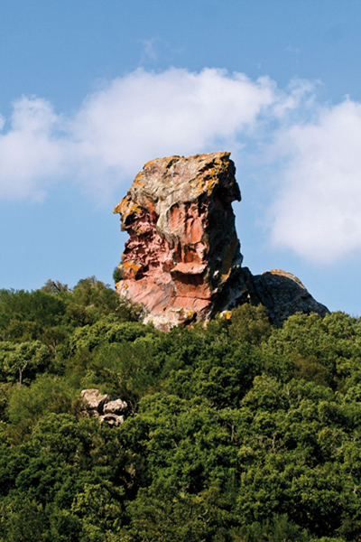

Es Mercadal, l'esatto centro di Minorca
 Il comune di Mercadal, il cui centro nevralgico è il paese con lo stesso nome, ha una estensione di 134 kilometri quadrati e limita ad est con Alaior, al sud con Es Migjorn Gran e all'ovest con Ferreries. La maggioranza dei suoi abitanti si concentrano a Es Mercadal e Fornell, nella costa nord. Esistono anche vari nuclei residenziali, centri di attività turistiche del municipio.
Il comune di Mercadal, il cui centro nevralgico è il paese con lo stesso nome, ha una estensione di 134 kilometri quadrati e limita ad est con Alaior, al sud con Es Migjorn Gran e all'ovest con Ferreries. La maggioranza dei suoi abitanti si concentrano a Es Mercadal e Fornell, nella costa nord. Esistono anche vari nuclei residenziali, centri di attività turistiche del municipio.
L'attuale comune è una parte dell'antica Pobla des Mercadal e Castell de Santa Agueda, che anticamente era composto dalle popolazioni di Ferreries ed Es Migjorn Gran, attualmente indipendenti.
Es Mercadal è uno dei posti più antichi di Minorca. Nel 1301, il re Jaume II di Maiorca autorizzò la celebrazione del mercato dei giovedì, in un luogo denominato la 'pobla del Mercadal'. Sicuramente, questo mercato fù quello che diede il nome al paese, già che Mercatallus in latino significa 'luogo dove si realizzano attività mercantili".
Es Mercadal presenta un incrociato urbano articolato intorno al nucleo storico, che si sviluppa al passo del torrente per il 'Pla se ses eres'. Nella zona più elevata, si trova la chiesa di San Martino, e intorno a queste strade si espande tutta una trama di case bianche e tetti rossi.
La chiesa di San Martino corona la geografia urbana del paese. È un tempio iniziato a metà del XVIII secolo e costruito sopra un santuario più antico (XV -XVI s.). La sua costruzione finì all'inizio del XIX. Dall'aspetto massiccio, è coronata da un campanile dalla base quadrata.
 A pochi metri, si trova l'edificio del Comune, conosciuto popolarmente come "La Sala", della quale risalta la porta di accesso, il balcone del piano superiore e l'antico campanile.
A pochi metri, si trova l'edificio del Comune, conosciuto popolarmente come "La Sala", della quale risalta la porta di accesso, il balcone del piano superiore e l'antico campanile.
Del patrimonio architettonico locale bisogna menzionare l'Aljub, costruzione dell'epoca delle dominazioni britanniche. È un gran deposito costruito nel 1735, quando era governatore Richard Kane, con una capacità di più di 300 tonnellate.
Altri elementi di gran valore etnologico del paese sono la modesta ferramenta di Pepe Carretero, adesso museizzata, o il piccolo mulino della farina di Biel, più modesto di quello imponente di s' Aranji, un insieme di edifici ed istallazoni che formano la infrastruttura di una antica fabbrica di farine, considerata una dei pochi insiemi di archeologia industriale a Minorca.
Intorno al centro, tre mulini a vento arredano il perimetro rurale del municipio: quello della Tramontana, quello del Racó e quello dell'Enfora, nel cammino di Kane in direzione Ferreries.
Nella periferia del paese incontriamo l'accesso al Monte Toro, la montagna più importante di Minorca. È alto 357 metri sopra il livello del mare e offre una vista spettacolare dell'isola. È anche il centro spirituale dei minorchini. Lì si erge il santuario della Madre di Dio del Toro, immagine non esente da leggenda che nasce nel XIII secolo.
Vicino al paese di Es Mercadal esiste una gran diversità di paesaggi naturali. Risaltano le Basses di Lluriac, zona di gran ricchezza naturale per la sua biodiversità, in una zona di marisma litorale formato da varie pozze temporali e l'ultimo tramo del torrente.
Il litorale del Comune è uno dei più belli della costa minorchina. Ampliamente protetto, presenta la maggior estensione delle coste vergini dell'isola.
Il punto più settentrionale della costa minorchina è il capo di Cavalleria. Lì c'è il faro più antico dell'isola, della metà del XIX secolo. Nel suo intorno più immediato si trova il porto di Sa Nitja e la popolazione romana con lo stesso nome, mostra del gran valore della zona a livello umano e ambientale. Questa zona è una sintesi della ricchezza ecologica del litorale minorchino, in un intorno eccezionale.
La costa di Mercadal ha anche paesaggi idilliaci come le spiagge di Cavalleria, Binimellà o Pregonda, vergini e dall'acqua turchese. Ci sono anche altre spiagge in altri centri turistici come Tirant, Son Saura o Arenal den Castell, di facile accesso e con servizi.
Il Cammino dei Cavalli costeggia tutta la costa di Mercadal e permette transitare in paesaggi spettacolari e irripetibili. Insieme con il Cammino di Kane (prima via ad attraversare l'isola nel XVIII secolo) è una della vie storiche più importanti del municipio.
Le feste più importanti di Es Mercadal sono le feste di San Martino, di carattere cívico religioso, che si celebrano il terzo fine settimana di luglio, con i cavalli come principali protagonisti.
Es Mercadal risalta per la sua grande offerta gastronomica. Ai popolari 'amargos' e i 'carquinyols' si deve aggiungere una estesa offerta della gastronomia tradizionale, oltre le interessanti mostre dell'artigianato popolare.
Es Mercadal si è specializzato nel settore dei servizi, e alla sua offerta commerciale somma una gran attività nel settore fieristico, dove c'è il Centro Artigianale di Minorca o il museo della radio e dove si celebrano fiere di grande importanza come la Fiera del cavallo di razza minorchina o la Fiera della pernice.
Negli ultimi anni hanno preso piede i mercati artigianali stagionali e agroalimentari, risalta quello che si celebra i giovedì pomeriggio da giugno a settembre e che concentra migliaia di persone per le strade di Mercadal.
In oltre, per estensione e diversità, si possono anche praticare una infinità di sport che vanno dal golf, a Son Parc, all'ippica o ad attività nautiche, centralizzata nella stazione Nautica di Fornells.